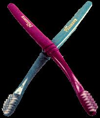

Created by Somerville, Massachusetts-based Recycline Inc., the Preserve is manufactured from pre- and post-con sumer waste plastics. "Our main supply has been wafer chip containers," says company president Eric Hudson, referring to the large plastic tubs in which computer chips are shipped worldwide. The plastic is processed, then tested in accordance with FDA standards to ensure that it is virgin-material clean.
But Recycline's eco-efforts don't end there: Putting its money where its customers' mouths are, the company includes with every purchase a postage-paid envelope in which the Preserve can later be returned, thereby helping buyers to "continue the cycle."
"The used Preserves make an excellent source material for recycled plastic lumber, which is great for outdoor products such as park benches and porch decks," says Hudson.
But do they make good toothbrushes? "Absolutely," says Hudson, noting that the Preserve's unique handle and bristle configuration were designed by a team of more than 20 dental professionals. For Hudson, the Preserve represents the perfect marriage of conservation and practicality. "I walled to start a business that would not only develop products with a strong recycling component, but that would also introduce products that offer a new function or a strong functional advantage over existing products."
The Preserve retails for $3.79 at natural foods stores nationwide, including Trader Joe's, Whole Foods Market and Wild Oats. Recycline has also launched an online subscription program, through which, for $17.50, consumers can have four toothbrushes shipped at regular intervals. For more information, call (888) 354-7296 or visit the Web at www.recycline.com .
-Marguerite Lamb
|
 The Preserve comes in six colors, all formulated with an eye toward avoiding minerals that involve intrusive mining procedures. |
|
|